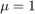
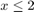
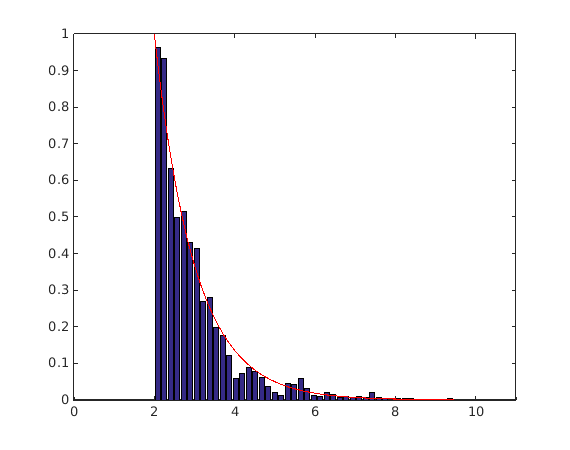

CODES / common / mcmc
Component Metropolis-Hastings
Contents
Syntax
- x=CODEScommon.mcmc(sites,N,PDFs_target) performs component Metropolis-Hastings. sites is a (nc x dim) matrix used to start nc Markov-chain. Each chain as N samples and x is the (N x dim x Nc) matrix of generated samples. PDFs_target is the target marginal PDFs. For a (n x dim) sample, PDFs_target(x) should return a (n x dim) matrix of marginal PDF values.
- [x,y]=CODEScommon.mcmc(sites,N,PDFs_target) returns the (N x 1 x nc) array y of rejection function values (requires a rejection function).
- [x,y,dy]=CODEScommon.mcmc(sites,N,PDFs_target) returns the (N x dim x Nc) array dy of rejection gradient (requires a rejection function and gradient option).
- [...]=CODEScommon.mcmc(...,param,value) uses a list of parameters param and values value (see, parameter table)
Description
Component Metropolis-Hasting as discussed in Au & Beck (2001). As opposed to the regular algorithm where a joint target and proposal PDF is provided, this variant works with marginal target and proposal PDFs. Acceptance/rejection decision is made dimension per dimension.
Parameters
| param | value | Description |
|---|---|---|
| 'prop_rand' | function_handle, {@(x)normrnd(x,ones(size(x)))} | Proposal random sampler. For a (n x dim) sample x, returns a (n x dim) sample of proposed candidates. By default, uses normal with mean x and standard deviation 1. |
| 'burnin' | positive integer, {0} | Number of samples to be “burned” at the begining. |
| 'rejection' | function_handle, {-1} | A rejection function. For a (n x dim) sample x, rejection(x) should return a (n x 1) array of rejection function value. Samples are rejected if rejection function value is positive. |
| 'gradient' | logical, {false} | Wether or not gradient of the rejection function should be returned. If 'on', rejection should return 2 outputs [y,dy] where y and dy are the (n x 1) array of rejection function values and the (n x dim) array of rejection gradient respectively. |
| 'initial_values' | numeric, { [ ] } | An array of initial rejection values. |
| 'initial_gradients' | numeric, { [ ] } | An array of initial gradients. |
Example
Generate samples from an exponential distribution () while rejecting samples such that:

pdf=@(x)exppdf(x,1);
rejection=@(x)2-x;
x_mcmc=CODES.common.mcmc(3,2000,pdf,'rejection',rejection);
CODES.common.hist_fd(x_mcmc,@(x)exppdf(x,1)/(1-expcdf(2,1)))
axis([0 11 0 1])
 References
- Au & Beck (2001): Au, S.-K., & Beck, J. L. (2001). Estimation of small failure probabilities in high dimensions by subset simulation. Probabilistic Engineering Mechanics, 16(4), 263-277. DOI
Copyright © 2015 Computational Optimal Design of Engineering Systems (CODES) Laboratory. University of Arizona.
|
|
Computational Optimal Design of Engineering Systems |

|